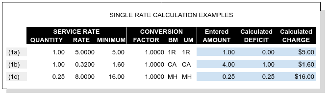

Extending Rates to Charges¶
A service may have a single rate, a break table of rates, or tiered rates, where multiple rates in tiers vary with quantity. Charges are calculated from quantities and rates according to the following rules.
- Quantity is required to be positive, the default value is 1.
- Where the quantity is not 1, the rate is for the quantity stated. For example, labor charged at the rate of $8.00 per quarter hour or fraction thereof would have a quantity of .25 and a rate of $8.00. Entered or calculated Amounts will be adjusted in proportion to the quantity.
- A rate entry is required unless the service is optional.
- The default minimum is the quantity times the rate. Enter a higher amount as desired.
- The quantities or measures in tiered rates or rate break tables must be listed in ascending order.
- Tiered rates with minimums are calculated to eliminate rate irrationality.
Minimums and Deficits¶
Where a Minimum charge is part of a rate, and the calculated product of Amount and Rate is less than the minimum, WARES will apply a Deficit to satisfy the minimum requirement. For single rates, a deficit amount always increases the extension of a rate to meet a minimum. However, with tiered rates a deficit amount may result in a decreased extension, that is, it may be to the customer’s benefit.
Basic Charge Calculations¶
The basic formula to calculate a charge from a rate is:
Deficit is the larger of:
(a) ( Minimum * Factor / Rate ) - Amount
(b) 0
and Charge is:
Charge = Rate * ( Amount + Deficit ) / Factor
Subtle differences in the way a rate is expressed may have significant effects on revenue. Following examples show a variety of charge calculations based on similar rate entries to illustrate this point.
Section 1: Single Line Rates¶
The simplest rates consist of a single line of information, as shown in example 1.
Part (1a): Straight Rate¶
Where a quantity is 1, the rate will provide a default minimum. In the example, a charge of $5.00 is applied to each qualifying activity (UOM = 1R represents a transaction). The Minimum is the Rate, and therefore Deficit is always zero.
Part (1b): Minimum Applies¶
A Minimum greater than the Rate may apply, and deficient Amounts will trigger a Deficit to result in a charge equal to the minimum. In this example a $.32/case pick fee with a minimum equivalent to 5 cases is applied, while only 4 cases were picked.
Part (1c): Quantity Not One¶
A decimal Quantity may be used for rates expressed in fractional amounts, or a Quantity may be greater than 1. Here MH labor is charged as $8.00 per quarter hour or fraction thereof, with a minimum of $16.00, or a half hour of labor. This changes the Deficit formula to the larger of:
(a) ( Minimum * Factor * Quantity / Rate ) - Amount
(b) 0
and the extended Charge formula becomes:
Charge = Rate * ( Amount + Deficit ) / ( Quantity * Factor )
Section 2: Rate Break Tables¶
Related single rates that differ by quantity level may be combined into a rate break table. An example of this would be picking charges for screws which are inventoried by each (EA) but are in bags of 12 (DZ) with 12 bags to a box (GS). Clearly picking is easier by the dozen or the gross, and so picking charges should reflect these economic order quantities (EOQ).
There are two types of rate break tables: numeric breaks, and measure breaks. Screws inventoried and ordered by EA would require a numeric break table, while consumer items with variable packing but consistent units of measure, say eaches (EA), inner packs (PK), and cases (CA), would require measure breaks.
A warehouse customer might have a group of products which are inventoried without inner measures, other products which break down into packs and eaches, and yet another group of products which are counted or measured into EOQ. Three separate rate groups could be defined for the account’s picking fees, and the correct rate group could be applied optionally based on the product being picked. This might work, but it sounds like a billing nightmare. What if products from two groups are shipped on the same order?
Fortunately WARES can address this problem. Three rate groups need to be defined, each of which would include the calculated rates for product storage and handling. The additional picking rates, also applied calculated, would be added to appropriate rate groups, and products would be assigned to rate groups according to their picking charge requirements.
Note
This example clarifies what “applied calculated” means: a calculated rate depends on information external to the activity being rated. In this case, the external information for applying the rate is the rate group assigned to a product, and the measures used on the product. A special calculation routine is required to process this information.
The following requirements apply to rate break tables:
- A rate break table must belong to the calculated storage and handling rate group for a product.
- Break rates should be applied calculated, just as storage and handling are.
- All products in a rate group must use the same rate break table. If not, create a separate rate group for non-conforming products.
- For measure break rates, each product in the group must list the activity units of measure from the rate table along with corresponding conversion factors.
Tip
Where single-line rates are calculated by product group, the rates may be defined in the same way as rate break tables. Said another way, a break table must contain at least one rate line.
Charge calculation for a break table follows these steps:
- Calculation begins with the largest line quantity which divides the activity amount for a numeric rate table, or at the UOM line matching the activity unit of measure for a measure table.
- The corresponding line of the table is applied as a single rate.
- Where an activity amount is not evenly divided by a break line quantity, the remainder amount is calculated as a separate charge line.

Part (2a): Numeric Breaks¶
Example (2a) shows order quantity breaks with corresponding billing UOMs. Ordering in multiples of 12 (DZ for dozen) or 144 (GS for gross) would apply charges by the corresponding break line. Charge calculation proceeds as follows:
- Identify the largest break quantity less than or equal to the amount: 288 would go with line 3, and 24 would go with line 2.
- Divide the amount by the line quantity: dividing 288 by 144 results in a billable amount of 2 GS, 24 divided by 12 gives a billable amount of 2 DZ.
- Treating a line as if it were a single rate, calculate any deficit and extend the charge. 2 GS extends to $16.00, and 2 DZ extends to $8.00.
- Where division in Step 2 leaves a remainer, calculate the leftover amount as a separate charge billed at the preceding level. For example, 300 EA yields two charge lines: 2 GS @ $8.00 = $16.00, and 1 DZ @ $4.00 = $4.00. Similarly 50 EA = 4 PK + 2 EA, generating billing lines for 4 PK @ $4.00 = $16.00 and 2 EA @ .50, with a minimum of $1.60, = $1.60.
Part (2b): Measure Breaks¶
Example (2b) shows Each, Pack, and Case charges where inventory is counted in EA (each), but activity is performed in EOQ units of measure. Charges are calculated according to the UOM used. The break line of the corresponding UOM is treated as a single rate.
Section 3: Rate Tiers¶
Rate tiers offer several pricing options. A tiered rate may provide pricing with step changes (no deficits), with transition deficits benefiting the customer below the step, or with transitions beginning above the step.
In this example, a container stripping fee is charged according to container weight. A charge is calculated for a container weighing 39,000 lb. and one weighing 40,000 lb. Rates are the same in each part of the example except for the minimums.

Part (3a): Irrational Rates¶
Deficit quantities are not calculated when minimums are absent. in part (a), there are no minimums and the charge at 40,000 lb. is $12.40 less than the charge at 39,000 lb. This is considered a pricing irrationality.
Part (3b): Favorable Deficit¶
Irrationalities can be eliminated by applying line minimums. In part (b), the minimums on the second and third line equal the product of Quantity and Rate on those lines. WARES will compare the charge with the minimum at the next higher break, and if that minimum is less, a deficit will be added to move to the next rate level.
Now when not the final rate tier, the Deficit calculation becomes, if:
Minimum(n+1) < Rate(n) * Amount / ( Quantity(1) * Factor )
then:
Deficit = Quantity(n+1) - Amount
else Deficit is the greater of:
( Minimum(n) * Factor * Quantity(1) / Rate(n) ) - Amount
0
And the Charge calculation is as stated before at all tiers:
Charge = Rate(n) * ( Amount + Deficit ) / ( Quantity(1) * Factor )
Example calculation
Given the amount 39,000, we check the Minimum at the next level:
128.00 < ( .3600 * 39,000 ) / ( 1.00 * 100.00 )
And so the Deficit is:
Deficit = 40,000 - 39,000 = 1,000
and the charge is always calculated as:
Charge = .3200 * ( 39,000 + 1,000 ) / ( 1.00 * 100.00 ) = 128.00
The customer receives the benefit of a lower charge by being billed for a greater quantity based on the deficit.
Part (3c): Rational Deficit¶
To avoid a price reduction for amounts below a break level, minimums should equal the break Quantity times the Rate of the previous level. In this example:
Minimum(2) = Quantity(2) * Rate(1) / Factor = 20,000 * .400 / 100.0 = 80.0
Minimum(3) = Quantity(3) * Rate(2) / Factor = 40,000 * .360 / 100.0 = 144.0
Now the charge at Amount = 39,000 lb. extends to $140.40 just as it did in part (a), but this is less than the next minimum of $144.00.
At Amount = 40,000 lb. there is a Deficit = 5,000 so that the charge meets the line minimum, $144.00. There is no rate irrationality, but the customer receives no benefit from the rate break at or below 40,000 lbs.
Charges Auditing and Display¶
WARES produces invoices summarized by rate, and transaction details supporting the invoice are provided in audit reports. These reports are described in the documentation topic bill-audits.